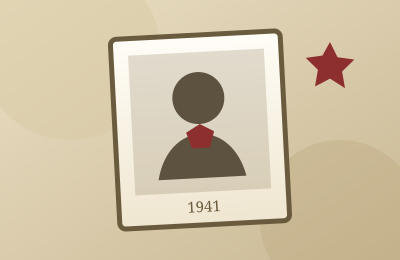
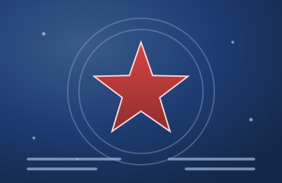
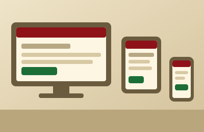
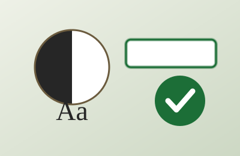
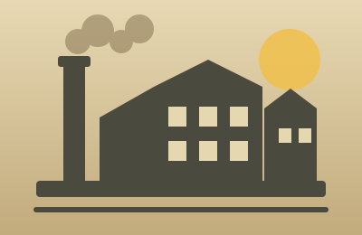

Проект «Дети войны»
Сайт-мемориал о судьбах детей Беларуси в годы Великой Отечественной войны
Итоговая практическая работа · Учебная практика «Веб-программирование»
Выполнил(а): Иванов М.С., группа Т491-23
Навигация: левая кнопка мыши — вперёд, правая — назад, либо клавиши ← и →
Актуальность проекта
- Живых свидетелей войны становится всё меньше — растёт риск утраты личной памяти.
- Война глазами детей: эвакуация, оккупация, голод, потеря близких, работа в тылу.
- Проект собирает и систематизирует проверенные материалы для новой аудитории школьников и студентов.
- Тема сохраняет историческую память Беларуси и опирается на официальные источники.
Цель и задачи
Цель — создать учебный сайт, который сохраняет и представляет материалы о судьбах детей в годы Великой Отечественной войны.
- Отобрать и проверить исторические материалы по официальным источникам.
- Подготовить четыре тематических раздела с фактами и свидетельствами.
- Реализовать адаптивную и доступную вёрстку сайта.
- Добавить интерактивность: поиск, каталог, чек-лист и проверку знаний.
- Провести тестирование и оценить качество проекта.

Целевая аудитория
школьники
студенты
учителя истории
педагоги и воспитатели
родители
работники музеев и библиотек
все, кто интересуется историей
Структура проекта
- index.html — главная страница
- section-1…4.html — четыре раздела
- checklist.html — чек-лист
- registry.html — каталог записей
- knowledge.html — проверка знаний
- Служебные — сравнение вёрстки, страницы фреймворка, утилиты
- css/ — стили проекта и фреймворка
- js/ — сценарии на jQuery и Bootstrap
- assets/ — изображения SVG и данные каталога
Тематические разделы сайта
- Раздел 1 — Судьбы детей Беларуси в годы войны
- Раздел 2 — Пионеры и партизаны
- Раздел 3 — Тыл: труд и лишения
- Раздел 4 — Музейный архив
- Главная — о проекте, хроника, новости
- Инструменты — чек-лист, каталог, проверка знаний
Ключевые технические решения
- Семантическая разметка HTML5: header, nav, main, article, section, footer.
- Адаптивная вёрстка на CSS Grid и Flexbox с медиа-запросами.
- CSS-переменные и переключаемая тёмная тема оформления.
- Доступность: подписи полей, видимый фокус, контраст, alt у изображений.
- Прогрессивное улучшение и работа сайта офлайн, без внешних CDN.

Адаптивность и темы
- Контрольные точки по min-width: 768, 992 и 1024 пикселя.
- Перестройка сетки по max-width: 480, 520, 760, 860, 1000 и 1100 пикселей.
- Удобное меню-«бургер» на узких экранах и крупные элементы управления.
- Светлая и тёмная темы через CSS-переменные, выбор запоминается в браузере.
- Корректная работа при масштабировании до 200 %.

Доступность
- Валидатор не нашёл ошибок ни на одной из 14 страниц.
- У всех 29 изображений задан текстовый аналог alt.
- На странице проверки знаний — 42 подписи для 42 полей формы.
- Контраст текста от 7,99 до 13,89 — выше требований WCAG уровня AA.
- Есть ссылка «Перейти к содержимому», видимый фокус и ARIA-атрибуты.

Интерактивность
- Поиск по новостям с подсветкой совпадений.
- Каталог записей: поиск, фильтрация, сортировка и статистика.
- Чек-лист: заполнение, сохранение результатов и расчёт итога.
- Проверка знаний: вопросы, валидация формы и вывод результата.
- Мгновенное переключение темы оформления на любой странице.

Вёрстка и CSS-фреймворк
- Использован Bootstrap 5.3.3, размещённый локально.
- Компоненты: навигация, карточки, аккордеон, модальные окна, уведомления, прогресс, формы.
- Тематизация через CSS-переменные и собственный слой стилей проекта.
- Файлы фреймворка не изменяются; есть страницы сравнения вёрстки «до и после».
Результаты тестирования
0
ошибок валидатора на 14 страницах
17/17
шагов сквозного сценария пройдено
AA+
контраст текста по WCAG
Кроссбраузерность и оптимизация
проверено в 4 браузерах
4 диапазона ширины экрана
масштаб до 200 %
работа офлайн
печать памяток и страниц
изображения SVG от 0,4 КБ
Итоги и направления развития
- Проект целостен и работоспособен, прошёл комплексное тестирование.
- Освоены разметка HTML, адаптивная вёрстка, интерактивность, CSS-фреймворк и тестирование.
- Развитие: новые разделы и истории, база данных, форма обратной связи, версия для печати альбома.
Спасибо за внимание!
Помним. Гордимся. Сохраняем.
Готов(а) ответить на ваши вопросы